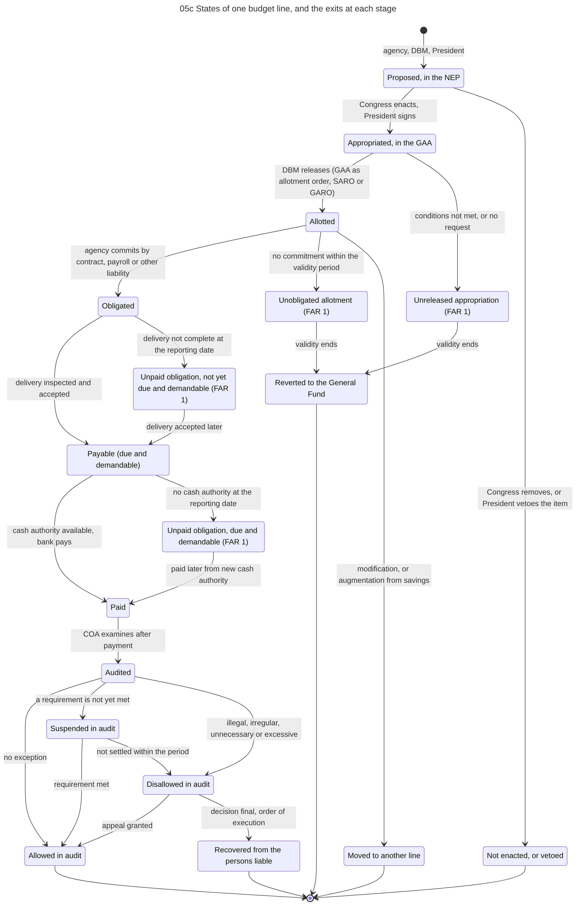

Diagram 05c · Mermaid state diagram
States of one budget line, and the exits at each stage
Question: An amount is in the budget but was not spent. At which stage did it stop, and who had the power to advance it?

What the diagram shows
- Question: an amount is in the budget but was not spent. At which stage did it stop, and who had the power to advance it?
- Rule of the main line: each stage is a ceiling for the next one. Appropriation >= allotment >= obligation >= disbursement.
- The four exits marked FAR 1 are the balance columns of report FAR No. 1 (Statement of Appropriations, Allotments, Obligations, Disbursements and Balances): unreleased appropriations, unobligated allotments, and unpaid obligations in two kinds.
- Sources: release by GAA as allotment order or by SARO or GARO, validity and reversion [NBC599]. FAR 1 and the definition of due and demandable [JC2019-1]. Modification and augmentation [NBC599][CONST VI.25(5)]. Audit after payment [COA2011-002]. Audit outcomes [COA2009-006].
- Check each year: the validity period of each kind of appropriation is fixed by that year's GAA and release guidelines.
Code

---
title: "05c States of one budget line, and the exits at each stage"
---
stateDiagram-v2
direction TB
%% QUESTION THIS DIAGRAM ANSWERS: an amount is in the budget but was not spent. At which stage did it stop, and who had the power to advance it?
%% RULE OF THE MAIN LINE: each stage is a ceiling for the next one. Appropriation >= allotment >= obligation >= disbursement.
%% The four exits marked FAR 1 are the balance columns of report FAR No. 1 (Statement of Appropriations, Allotments, Obligations, Disbursements and Balances): unreleased appropriations, unobligated allotments, and unpaid obligations in two kinds.
%% SOURCES: release by GAA as allotment order or by SARO or GARO, validity and reversion [NBC599]. FAR 1 and the definition of due and demandable [JC2019-1]. Modification and augmentation [NBC599][CONST VI.25(5)]. Audit after payment [COA2011-002]. Audit outcomes [COA2009-006].
%% CHECK EACH YEAR: the validity period of each kind of appropriation is fixed by that year's GAA and release guidelines.
state "Proposed, in the NEP" as Proposed
state "Appropriated, in the GAA" as Appropriated
state "Allotted" as Allotted
state "Obligated" as Obligated
state "Payable (due and demandable)" as Payable
state "Paid" as Paid
state "Audited" as Audited
state "Not enacted, or vetoed" as Dropped
state "Unreleased appropriation (FAR 1)" as Unreleased
state "Unobligated allotment (FAR 1)" as Unobligated
state "Moved to another line" as Moved
state "Unpaid obligation, not yet due and demandable (FAR 1)" as NotYetDue
state "Unpaid obligation, due and demandable (FAR 1)" as Unpaid
state "Reverted to the General Fund" as Reverted
state "Allowed in audit" as Allowed
state "Suspended in audit" as Suspended
state "Disallowed in audit" as Disallowed
state "Recovered from the persons liable" as Recovered
[*] --> Proposed: agency, DBM, President
Proposed --> Appropriated: Congress enacts, President signs
Proposed --> Dropped: Congress removes, or President vetoes the item
Appropriated --> Allotted: DBM releases (GAA as allotment order, SARO or GARO)
Appropriated --> Unreleased: conditions not met, or no request
Allotted --> Obligated: agency commits by contract, payroll or other liability
Allotted --> Unobligated: no commitment within the validity period
Allotted --> Moved: modification, or augmentation from savings
Obligated --> Payable: delivery inspected and accepted
Obligated --> NotYetDue: delivery not complete at the reporting date
NotYetDue --> Payable: delivery accepted later
Payable --> Paid: cash authority available, bank pays
Payable --> Unpaid: no cash authority at the reporting date
Unpaid --> Paid: paid later from new cash authority
Unreleased --> Reverted: validity ends
Unobligated --> Reverted: validity ends
Paid --> Audited: COA examines after payment
Audited --> Allowed: no exception
Audited --> Suspended: a requirement is not yet met
Suspended --> Allowed: requirement met
Suspended --> Disallowed: not settled within the period
Audited --> Disallowed: illegal, irregular, unnecessary or excessive
Disallowed --> Allowed: appeal granted
Disallowed --> Recovered: decision final, order of execution
Allowed --> [*]
Recovered --> [*]
Reverted --> [*]
Dropped --> [*]
Moved --> [*]